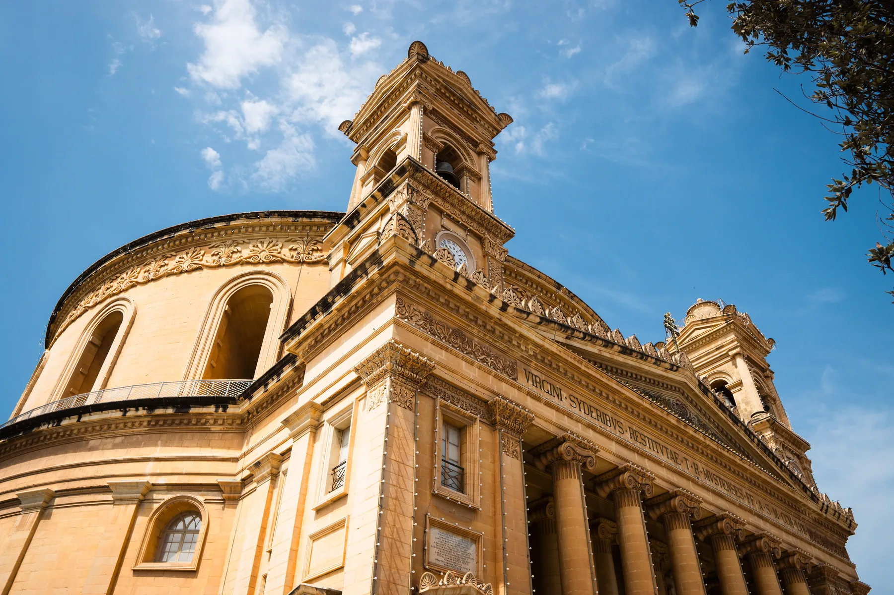

Test the streets around the Rotunda at the time you would normally arrive home, not only during a quiet viewing.
MOSTA · CENTRAL MALTA
Centre, errands, layers.
Mosta is more than its landmark dome. Read the town as a working centre: an active core, a larger retail catchment and heritage that reaches beyond the square.

MOSTA EDITIONREAD THE TOWN IN TWO PARTS
A landmark core and a wider everyday radius.
The Local Council describes Mosta as a central, urbanised town on the Valletta–Ċirkewwa axis. That makes the exact address important: the square, the bypass and the larger retail edge do not offer the same daily rhythm.
Large-format retail exists in the wider locality, but convenience depends on your exact street and usual transport.
The council records heavy north–south traffic flows. Compare the approach in both directions before relying on a locality average.
Rotunda, shelter and museum.
The parish visitor portal brings the basilica together with its crypt, museum, dome areas and Second World War shelter. It is an active place of worship as well as a visitor site, so current access and times belong on the operator's page.
Check the current visitor information ↗Ta' Bistra and the fortified edge.
Heritage Malta identifies Ta' Bistra as the largest known group of catacombs outside ancient Melite. The council also records Mosta sections of the Victoria Lines and Wied il-Għasel, but this edition does not turn those references into an unverified continuous trail.
Heritage Malta: Ta' Bistra ↗OPERATOR-VERIFIED EXAMPLES
Useful anchors, without a ranking.
These places demonstrate the range of everyday and dining options. They are examples with direct operator evidence, not a claim that they are the best or closest to every property.
PAMA
The operator confirms a supermarket and shopping destination on Valletta Road in Mosta. Check current services directly.
Operator information ↗Square PAMA
The operator describes home-style and Mediterranean food at PAMA Shopping Village. Offers and hours remain changeable.
Restaurant information ↗Ta' Marija
The Constitution Street operator presents Maltese cooking and tasting menus. Event schedules and availability should be checked directly.
Restaurant information ↗No generic journey time.
A Mosta label cannot describe every commute. Walking, bus timetable and current driving conditions remain separate checks from the exact entrance. No straight line on this page is presented as a route.
Open the area map only when you need it.
The map is deliberately broad and contains no invented boundary, walking shortcut or commute time. It loads from OpenStreetMap only after your click.
Mosta Local Council · Local Council historical places · Mosta Parish visitor portal · Heritage Malta: Ta' Bistra · PG/PAMA · Square · Ta' Marija
No ranking, fixed opening hours, property-specific route, accessibility promise, uninterrupted heritage trail or locality-wide travel time is claimed.